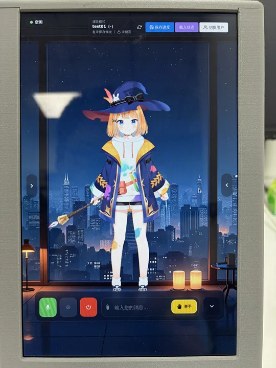
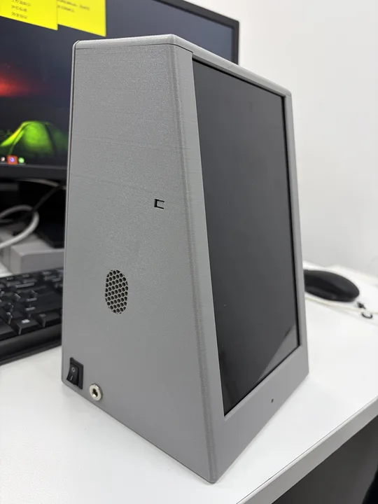
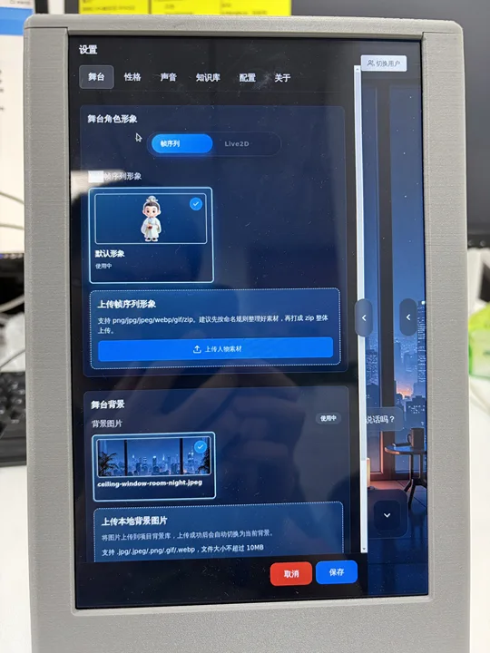
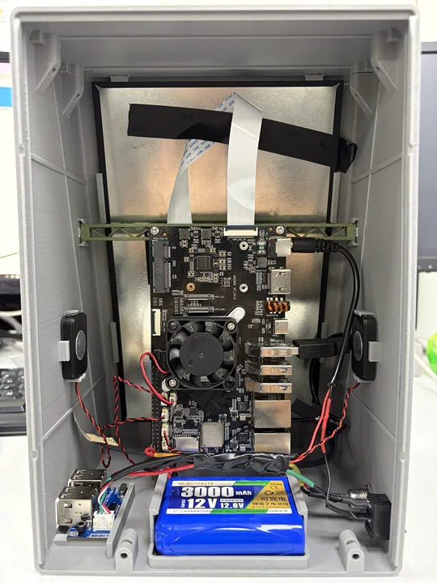
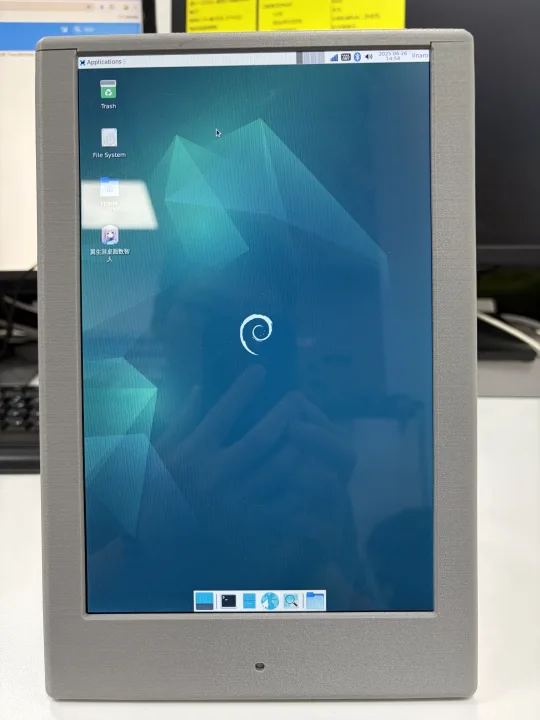

桌面数智人
一体机
一个从产品形态出发的软硬件协同实践：让数字人从屏幕里的概念，进入一台真实、可运行的桌面设备。
- 项目类型
- 产品原型
- 核心方向
- 软硬件集成
- 材料线索
- 整机 / 结构 / 运行界面
- 展示重点
- 产品判断与推进过程



01 / PROJECT OVERVIEW
把“一个数字人想法”，推进到“一个真实设备”。
资料已经覆盖整机外观、亮屏界面、拆机内部结构、Linux 运行环境、采购清单、螺丝规格以及外壳工程资料。这个案例的重点，是把零散的硬件与软件线索整理成一条可以被快速理解的产品路径。
Form桌面一体机
ComputeRK3576 K7 平台
EnvironmentLinux 运行环境
Evidence照片 / 界面 / 结构资料
02 / SYSTEM VIEW
从屏幕上的角色，到设备里的完整链路。
用三层关系看这个原型：用户看到的是交互，设备承载的是硬件，背后连接的是模型、语音和内容能力。产品价值来自它们在一个具体形态里的协同。
01 / Experience屏幕与交互
角色呈现、模型切换、配置面板与桌面使用场景。
02 / Device硬件与结构
外壳、主板、屏幕、扬声器、麦克风、电池与散热。
03 / IntelligenceAI 能力
大模型、语音合成、内容生成与可持续扩展的服务接口。
03 / BUILD EVIDENCE
真正的产品理解，藏在零件和装配关系里。
外观照片说明产品如何被使用，内部照片说明它如何被做出来，界面截图则说明软件能力如何进入设备。


04 / MY CONTRIBUTION
我在这个案例中关注四件事。
01
形态与结构
从桌面使用场景出发，观察外壳、屏幕与内部部件如何共同形成产品。
02
硬件集成
理解主板、音频、供电、散热和连接件之间的关系，建立整机视角。
03
软件进入设备
把数字人运行界面、角色配置和 AI 能力放进真实的硬件载体中验证。
05 / OUTCOME
留下一个可以继续迭代的产品原型。
- 有真实外观与运行状态的桌面设备
- 覆盖界面、系统和硬件的产品资料
- 可以继续扩展角色与 AI 能力的交互基础
- 从 BOM、结构件到装配照片的工程线索
下一个案例：把长期收藏变成可以再次使用的知识系统。
X 书签知识库